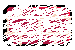
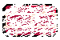

Version 0.0.2
This version saw some interesting improvements over the base game. Most importantly, this game is fully mobile responsive! Also the UI was updated to be more lively and interesting. Finally, some core funtionality was added, such as score keeping, extra lives, and music and SFX. If interested in the code behind the madness, or well, the madness behind the code anyways, feel free to take a look on Github.
- Added Feature List:
- Mobile Responsive App- Now fully playable on mobile!
- Add buttons for use on mobile: left, right, start, and pause, only visible on smaller devices. Resize your browser window for demo.
- Add actual score mechanism, no longer simply tracking remaining bricks.
- Add combo multiplier for increased points after successive breaks.
- Add ball speed modifier that slightly increases ball speed as levels are beaten.
- Add extra life mechanism, one chance for an extra life each level.
- Add extra life display graphic, updated base block image to a special powerup image.
- Increased number of generated levels, Max Level is now 50!
- Add new level gamestate allowing for players to catch their breath before starting a new level.
- Improved collision detection and ball redirection.
- Slight increase to ball size and reformating block layout.
- Made canvas element's background colorful and dynamic
- Add SFX and background music.
- Add brick break animations
- Add timing functions for certain actions, a.k.a., pick up extra life within a time limit.
I'm continuing to work on this app in my free time. I intend to round out some more features, refine current capabilities, and possibly even deploy a mobile specific version to the play store || app store.

- Upcoming Features! Release Date: TBD
- Multiple Ball Booster
- Multi hit bricks
- New level generation to add specific layouts to challenge players
- Further refinement of collision detection and game functions.